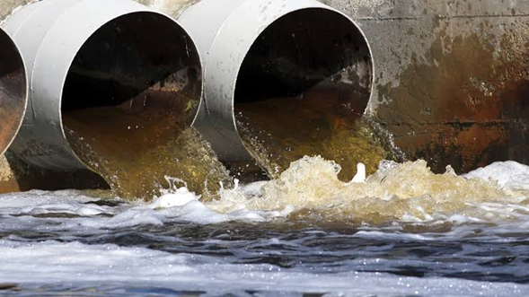

Impacto, causas y tratamiento
Son aguas que han sido utilizadas por el ser humano en actividades domésticas, industriales, agrícolas o comerciales, y contienen contaminantes que pueden dañar la salud y el medio ambiente.
Incluyen aguas de uso doméstico (baños, cocinas), industriales (fábricas), agrícolas (ganadería) y aguas pluviales contaminadas.
Los tratamientos incluyen procesos físicos, químicos y biológicos para eliminar contaminantes: